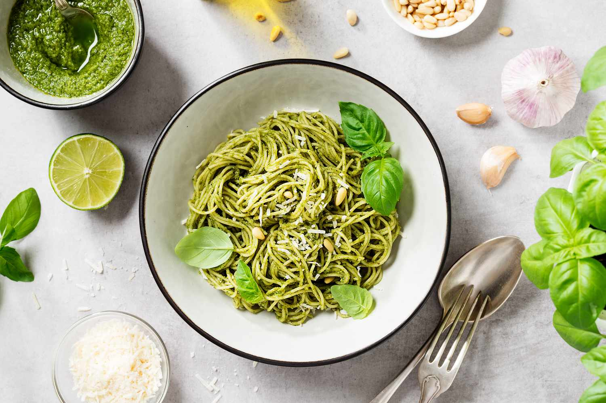

Green noodles

Description
Delight in the vibrant hues and wholesome flavors of our green noodles recipe. Begin by selecting your preferred green noodles, whether it's spinach-infused strands or traditional noodles dyed with fresh spinach puree. In a pot of boiling salted water, cook the noodles until they achieve a perfect al dente texture.
Meanwhile, in a blender, concoct a verdant sauce by blitzing together fresh spinach leaves, garlic cloves, and a drizzle of olive oil until smooth and fragrant. Once the noodles are cooked, toss them generously in the vibrant green sauce, ensuring each strand is coated in its verdant embrace. Serve piping hot, optionally garnished with a sprinkle of grated Parmesan cheese for added richness.
Ingredients
- 2 cups (about 60g) of fresh spinach leaves
- 8 ounces (about 225g) of green spinach noodles (or you can use regular noodles if you prefer)
- 2 cloves of garlic, minced
- 2 tablespoons of olive oil
- Salt and pepper to taste
- Grated Parmesan cheese (optional, for serving)
Steps
- Bring a large pot of salted water to a boil. Add the green noodles and cook according to the package instructions until they are al dente. Drain the noodles and set aside.
- While the noodles are cooking, prepare the spinach sauce. In a blender or food processor, combine the fresh spinach leaves, minced garlic, olive oil, salt, and pepper. Blend until you have a smooth, vibrant green sauce.
- Once the noodles are cooked and drained, return them to the pot. Pour the spinach sauce over the noodles and toss until the noodles are evenly coated in the sauce.
- Transfer the green noodles to serving plates or bowls. If desired, sprinkle some grated Parmesan cheese on top for extra flavor. Enjoy!